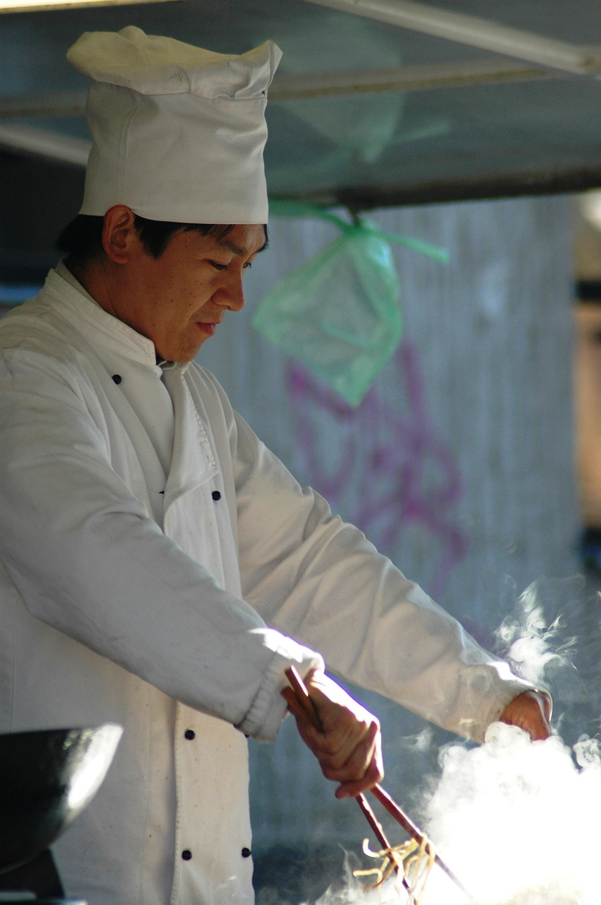

Chef Hiro fell in love with Italian cuisine during a memorable holiday in Italy. Inspired by its rich flavors, he now specializes in crafting delicious, authentic risotto. Using fresh ingredients and traditional techniques, Chef Hiro brings the heart of Italy to every dish. Join him on this culinary journey and taste the love and passion he puts into every plate.
